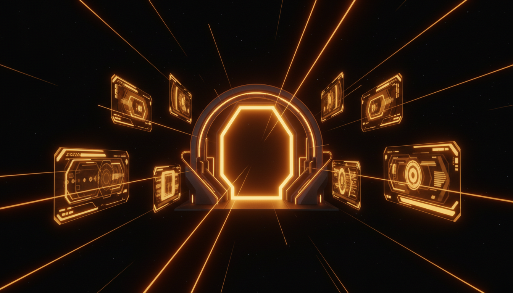

Style 004
The original Remote Viewer main-menu language: black void backdrop, warm amber borders, arcade-futurist typography, glossy glint sweeps, stacked portal buttons, and a dramatic but approachable interface mood. This is not clean editorial and not glass luxury — it is closer to a personal sci-fi console with theatrical warmth.
This is the home-screen / portal style of Remote Viewer. It combines a dark void background with warm amber-orange highlights, bold futuristic lettering, and a kind of game-menu or sci-fi kiosk sensibility. It feels more performative and identity-forward than the other styles — almost like a personal entrance sequence compressed into a menu page.
The emotional ingredients are: arrival, signal, glow, console, portal, warmth, and designed drama. It works well for launchers, dashboards, gateways, hub pages, profile/menu surfaces, and places where the interface itself should feel like an experience.
An interface that feels like a gateway or command deck rather than a plain document.
Warm signal color, stylized techno type, and a light retro-game flavor without going full pixel-art.
Animated sweep highlights and fine stripe overlays give the surface motion and energy.
The design is built around contrast, centered framing, and a sense of entering a destination.
Tall centered action buttons create a strong vertical portal rhythm.
Orange-amber accents soften the sci-fi feel and keep it from becoming cold-blue cyberpunk.
This image is meant to show the style’s kind of world, not just its color palette: glowing portal architecture, strong amber signal language, dark void contrast, and a sense of stepping into a destination rather than opening a plain page.

Use this style when the page is meant to feel like an entrance, launcher, index, or immersive hub. It is especially good when the UI needs personality and memorability — a place where the page itself should feel like a destination rather than a neutral container for content.
@import url('https://fonts.googleapis.com/css2?family=Inter:wght@400;600;700&family=Audiowide&display=swap');
:root {
--text: #e3eefc;
--line: rgba(255,153,86,.85);
--panel: rgba(10,10,10,.72);
--accent: #ff9a56;
}
body { background: #000; }
h1, .btn strong {
font-family: 'Audiowide', sans-serif;
text-transform: uppercase;
color: var(--accent);
}
.panel, .btn {
background: linear-gradient(160deg, rgba(20,20,20,.62), rgba(8,8,8,.62));
border: 2px solid var(--line);
}
/* add subtle stripe overlays + glint sweep for energy */